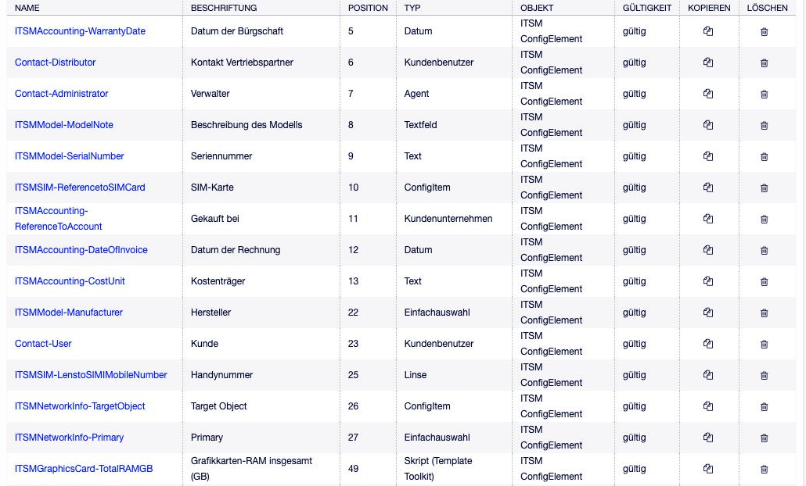

Feldtypen und ihre Optionen¶
Diese Referenz listet die Feldtypen, die für den Objekttyp ITSM ConfigElement
angeboten werden, und ihre Einstellungen. Die Schlüssel entsprechen den Namen im
Export einer Klasse (DynamicFields → <Feld> → Config, siehe
Klassen exportieren und importieren). Wie die Felder praktisch eingesetzt werden,
beschreibt Dynamische Felder für Config Items.
Pro Klasse — nicht am Feld — werden in der Klassendefinition außerdem Label,
Mandatory und Readonly gesetzt (siehe Klassendefinition (YAML)).
Übersicht¶
Feldtyp ( |
im Set nutzbar |
sortierbar |
filterbar |
Referenz |
|---|---|---|---|---|
Text ( |
ja |
ja |
nein |
|
Textarea ( |
ja |
nein |
nein |
|
Richtext ( |
ja |
nein |
nein |
|
Checkbox ( |
ja |
ja |
ja |
|
Dropdown ( |
ja |
ja |
ja |
|
Multiselect ( |
ja |
nein |
nein |
|
Datum ( |
ja |
ja |
nein |
|
Datum/Zeit ( |
ja |
ja |
nein |
|
Titel ( |
nein |
ja |
nein |
|
Datenbank ( |
nein |
ja |
ja |
|
Webservice ( |
nein |
nein |
nein |
|
Set ( |
nein |
nein |
nein |
|
Script ( |
ja |
nein |
nein |
|
Lens ( |
ja |
ja |
nein |
|
GeneralCatalog ( |
ja |
ja |
ja |
|
Config Item ( |
ja |
ja |
ja |
ja |
Config Item Version ( |
nein |
ja |
ja |
ja |
Agent ( |
ja |
ja |
ja |
ja |
Kundenbenutzer ( |
ja |
ja |
ja |
ja |
Kundenfirma ( |
ja |
ja |
ja |
ja |
Ticket ( |
ja |
ja |
ja |
ja |
Service ( |
ja |
ja |
ja |
ja |
Sortierbar und filterbar beziehen sich auf die Spalten der CMDB-Übersicht.
Nicht angeboten werden Kontakt mit Daten (ContactWD, nur Tickets) sowie die
internen Prozessfelder ProcessID und ActivityID.

Abb. 19 Dynamische Felder für Config Items in Admin → Dynamische Felder¶
Einfache Feldtypen¶
Die einfachen Typen verhalten sich wie bei Tickets. Ihre Einstellungen:
- Text
Tooltip,MultiValue,DefaultValue,RegExList(Prüfung per regulärem Ausdruck mit Fehlermeldung),Link,LinkPreview- Textarea
Tooltip,MultiValue,DefaultValue,RegExList,Rows,Cols- Richtext
Einstellungsdialog wie bei Text und Textarea
- Dropdown
PossibleValues,TreeView,DefaultValue,PossibleNone,TranslatableValues,Link,LinkPreview,Tooltip,MultiValue- Multiselect
PossibleValues,TreeView,DefaultValue,PossibleNone,TranslatableValues,Tooltip- Datum, Datum/Zeit
DefaultValue,YearsPeriod,DateRestriction,YearsInFuture,YearsInPast,Link,LinkPreview,Tooltip,MultiValue- Checkbox
DefaultValue,Tooltip,MultiValue- Titel
Gestaltung einer Zwischenüberschrift:
FontSize,FontColor,FontTemplate,ActivateTemplate, Schriftschnitte (kursiv, fett, unterstrichen),Tooltip- GeneralCatalog
Class(Katalogklasse, aus der die Auswahlwerte stammen),PossibleNone,Multiselect,MultiValue,Tooltip- Datenbank, Webservice
Werte aus einer externen Datenbank bzw. einem Webservice; Einstellungen wie bei Ticketfeldern.
Referenzfelder: gemeinsame Einstellungen¶
Alle Referenztypen bis auf Kundenbenutzer haben diese Einstellungen:
ReferencedObjectTypeReferenzierter Objekttyp. Wird vom Feldtyp festgelegt und ist nicht änderbar.
EditFieldMode· Eingabemodus des EditierfeldsAutoComplete,DropdownoderMultiselect(in der Oberfläche; im Export alsDropdownmitMultiselect: 1).Multiselect1, wenn im Modus Multiselect gewählt wird. Wird ausEditFieldModeabgeleitet.PossibleNone· Leeren Wert hinzufügenLeerer Wert wählbar. Bei
AutoCompleteimmer1.MultiValue· MehrfachwerteMehrere unabhängige Werte. Bei
Multiselectimmer0.TooltipHinweistext am Feld.
LinkTypebzw.LinkObjectForReferenceTypeLinktyp, mit dem eine Beziehung zum referenzierten Objekt entsteht. Bei Referenzen auf Config Items heißt der Schlüssel
LinkType, sonstLinkObjectForReferenceType. Angeboten wird er nur, wenn zwischen den Objekttypen Linktypen erlaubt sind. Leer: keine Beziehung.LinkDirection· Link-RichtungReferencingIsSource(vorwärts, Standard) oderReferencingIsTarget(rückwärts). Nur zusammen mit einem Linktyp.
Bemerkung
Ist bei einem Referenzfeld auf Config Items ein LinkType gesetzt, müssen
auch LinkDirection und LinkReferencingType gesetzt sein. Fehlt eines
davon — etwa in einer von Hand bearbeiteten Exportdatei —, meldet OTOBO beim
Speichern eines Wertes Invalid dynamic field configuration.
Config Item (ConfigItem)¶
Zusätzlich zu den gemeinsamen Einstellungen:
ClassIDs· Klasseneinschränkungen für das KonfigurationsobjektKlassen, aus denen gewählt werden kann (Mehrfachauswahl). Leer: alle Klassen. Im Export als Klassennamen.
DeplStateIDs· Verwendungsstatus-Einschränkungen für das Config ItemVerwendungsstatus, die zur Auswahl stehen. Leer: alle.
LinkReferencingType· Link-ReferenzierungsartDynamic(Beziehung gilt für das Config Item, Standard) oderStatic(Beziehung gilt nur für die Version mit dem Wert). Nur bei Feldern am Objekttyp ITSM ConfigElement. Die Vorfallstatus-Vererbung nutzt nurDynamic.SearchAttribute· Beim Autocomplete durchsuchtes AttributWonach AutoComplete sucht:
Name(Standard, wenn leer) oderNumber.ImportSearchAttribute· External-source keyWie ein Wert aus Import oder Webservice zu verstehen ist:
Name,NumberoderDynamicField_<Name>. Leer: als interne ID. Siehe Werte aus Import und Webservice: ImportSearchAttribute.DisplayType· Für die Werte angezeigtes AttributAnzeige des Wertes:
ConfigItemName,ConfigItemNumber,ClassConfigItemName(Klasse: Name) oderClassConfigItemNumber(Klasse: Nummer). Leer:Name, in der LangformKlasse: Name.ReferenceFilterList· ReferenzfilterListe von Filterzeilen:
ReferenceObjectAttributeAttribut des referenzierten Config Items, z. B.
Name,NumberoderDynamicField_<Name>.EqualsObjectAttributeAttribut des bearbeiteten Objekts, dessen Wert verglichen wird — ein Feld der Maske oder
UserIDfür den angemeldeten Benutzer.EqualsStringFester Vergleichswert statt
EqualsObjectAttribute.
Ist der Vergleichswert leer, bleibt die Auswahl leer.
Gespeichert wird die ID des Config Items.
Config Item Version (ConfigItemVersion)¶
Einstellungen wie beim Typ Config Item. Gespeichert wird die ID der Version, die bei der Auswahl die neueste war. Das Feld kann nicht in einem Set verwendet werden und nimmt nicht an der Vorfallstatus-Vererbung teil.
OTOBO 11.1
Der Feldtyp ist in 11.1 überarbeitet:
Neue Option TreeView: Werte als Baum, gruppiert nach Config Item. Nicht mit
EditFieldMode: AutoCompletekombinierbar.DisplayTypekennt andere Werte:VersionString,ConfigItemNumberVersionString,ConfigItemNameVersionString,VersionStringConfigItemNumber,VersionStringConfigItemName. Ohne Angabe zeigt das Feld die Versionsbezeichnung, in der LangformName: Versionsbezeichnung.SearchAttributeundImportSearchAttributekönnen zusätzlichVersionStringverwenden.Die Auswahl bietet alle Versionen der gefundenen Config Items an, nicht nur die neueste.
Die DisplayType-Werte aus 11.0 gibt es in 11.1 nicht mehr. Bestehende
Felder dieses Typs nach dem Update prüfen und den Anzeigetyp neu setzen.
Agent (Agent)¶
GroupNur Agenten aus diesen Gruppen stehen zur Auswahl. Leer: alle.
ImportSearchAttribute· External-source keyUserLoginoderPostMasterSearch(E-Mail-Adresse).
Dazu die gemeinsamen Einstellungen.
Kundenbenutzer (CustomerUser)¶
EditFieldMode· Eingabemodus des EditierfeldsNur
AutoComplete.ImportSearchAttribute· External-source keyUserLoginoderPostMasterSearch(E-Mail-Adresse).MultiValue· MehrfachwerteMehrere Kundenbenutzer.
Linktyp, PossibleNone und ReferenceFilterList werden für diesen Typ nicht
angeboten.
Kundenfirma (CustomerCompany)¶
SearchAttribute· Beim Autocomplete durchsuchtes AttributCustomerIDoderCustomerCompanyName.
Dazu die gemeinsamen Einstellungen.
Ticket (Ticket)¶
Queue,TicketTypeNur Tickets aus diesen Queues bzw. mit diesen Typen.
SearchAttribute· Beim Autocomplete durchsuchtes AttributTicketNumberoderTitle.ImportSearchAttribute· External-source keyTicketNumber.DisplayType,ReferenceFilterListWie beim Typ Config Item, bezogen auf Ticketattribute.
Dazu die gemeinsamen Einstellungen.
Service (Service)¶
ImportSearchAttribute· External-source keyName.
Dazu die gemeinsamen Einstellungen.
Set (Set)¶
IncludeEnthaltene Felder als YAML: eine Liste aus
DF: <Name>und/oderGridmitColumnsundRows(Aufbau wie in der Klassendefinition). Die Felder müssen existieren, im Set nutzbar sein und denselben Objekttyp haben.MultiValue· MehrfachwerteDie ganze Gruppe ist wiederholbar.
TooltipHinweistext.
OTOBO 11.1
ACLs können in 11.1 einzelne Felder innerhalb eines Sets ein- und ausblenden. Ein Lens-Feld, das auf ein Set zeigt, kann nicht in ein Set aufgenommen werden.
Lens (Lens)¶
ReferenceDFReferenzfeld des aktuellen Objekts. Muss ein Referenzfeld sein, sonst Field … is not a reference field.
AttributeDFFeld am referenzierten Objekt. In 11.0 zulässig: Checkbox, Date, DateTime, Dropdown, GeneralCatalog, Multiselect, Set, Text, TextArea, Title. Andere Typen werden mit A field of type … is currently not usable as lens attribute. abgelehnt.
TooltipHinweistext.
Beide Felder werden intern als ID gespeichert und im Klassenexport als Namen geschrieben. Ein Lens-Feld speichert keinen eigenen Wert; eine Eingabe wird in das referenzierte Objekt geschrieben (siehe Dynamische Felder für Config Items).
OTOBO 11.1
Als AttributeDF sind zusätzlich Agent, Kundenbenutzer, Kundenfirma,
Ticket, FAQ, Config Item, Config Item Version und Script zulässig.
MultiValue der Lens wird automatisch an das Attributfeld angeglichen.
Script (ScriptTemplateToolkit)¶
ExpressionTemplate-Toolkit-Vorlage. Daten unter
Data: Attribute des Config Items undDynamicField_<Name>.RequiredArgsFelder, die gefüllt sein müssen, bevor in der Maske berechnet wird.
AJAXTriggersFelder, deren Änderung in der Maske eine Neuberechnung auslöst.
UpdateEventsEreignisse, bei denen der Wert berechnet und gespeichert wird:
ConfigItemCreate,ConfigItemUpdate,VersionCreate,VersionUpdate,DeploymentStateUpdate,IncidentStateUpdate,NameUpdate,AttachmentAddPost,AttachmentDeletePost,VersionDelete,ConfigItemDelete.RegExListPrüfung des Ergebnisses per regulärem Ausdruck.
Link,LinkPreview,TooltipWie bei Textfeldern.